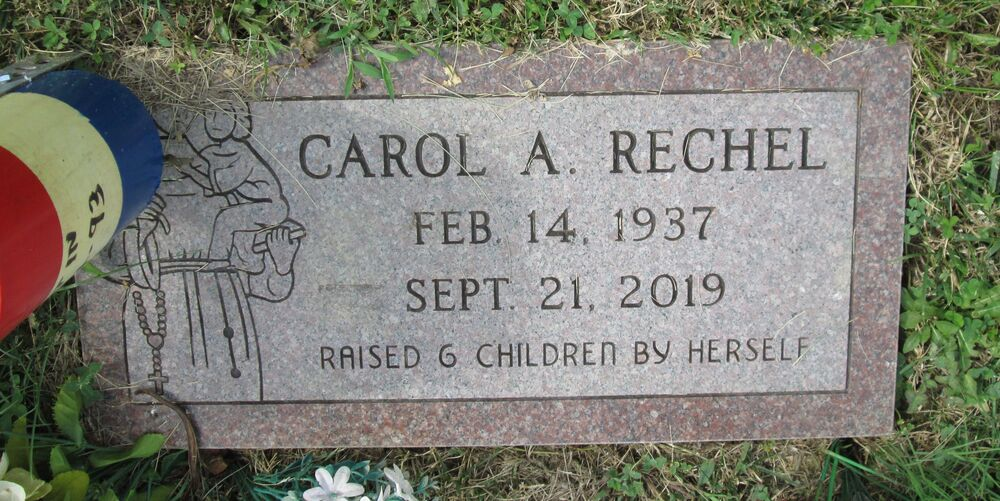

Brewster line · Eugene's wife · Cincinnati, Ohio, and Campbell County, Kentucky
Also known as: Carol A. Hillman; Carol Henderson; Carol Brewster; Carol Ann Rechel (her name at death)
Portrait of Carol as a young woman (photo added by Bob Pettit, Find a Grave).
Quick Facts
Born
14 February 1937, Cincinnati, Hamilton County, Ohio
Died
21 September 2019, Warren County, Ohio
Last residence
Warren County, Ohio
Buried
Saint Joseph Cemetery, Cincinnati, Hamilton County, Ohio, Section 15A, Lot 8, Grave 3
Occupation
Executive secretary
Religion
Catholic
Immediate Family
Parents
Father: unknown. H. Clyde Craig (1901–1939) is a possible lead only; Cincinnati directories place a man of that name in the city in the 1930s, but no record yet connects him to Carol.
19 Nov 1977 · age 40 Kentucky marriage-index entry pairs Carol A. Hillman with Eugene E. Brewster, Campbell County (certificate 24676); original certificate not yet inspected.
9 Nov 1979 · age 42 A second Kentucky marriage-index entry pairs Carol Brewster with Eugene E. Brewster, Campbell County (certificate 28705); whether this is a new marriage, correction, or other filing is unresolved.
16 Oct 1983 · age 46 Eugene E. Brewster died in Fairfield, Ohio. The death index says married; the index alone does not name Carol.
21 Sep 2019 · age 82 Died at home, Warren County, Ohio
27 Sep 2019 Funeral Mass at St. Matthias the Apostle; buried, Saint Joseph Cemetery, Cincinnati
Life Story
Carol Ann Craig was born in Cincinnati on February 14, 1937. A Cincinnati directory trail identifies a possible H. Clyde Craig in the city during the 1930s, but no birth, census, death or marriage record yet connects him to Carol; her parents therefore remain unconfirmed. She worked her whole life as an executive secretary, for the State of Ohio, for GE and for the Bureau of Workers' Compensation, and her obituary says she was proud to raise her children while she worked. Her headstone puts it more plainly: "Raised 6 children by herself." A separate note supplied by her daughter Mary Beth Hillman-Greco says Carol had four husbands: Paul Hillman (about 10 years, five children), Danny Henderson (about two years, one child), Eugene Brewster (no children, described by the family as eight years), and Norman Rechel (25 years). The two Kentucky index marriages to Eugene are recorded in 1977 and 1979; exact union dates and the family-recalled duration are not established by those indexes.
As Carol A. Hillman and later Carol Brewster, she appears in two Campbell County, Kentucky marriage-index entries with Eugene E. Brewster, dated November 19, 1977 (certificate 24676) and November 9, 1979 (certificate 28705). The original certificates have not been examined, so the nature of the two entries remains unresolved. Her family remembered the marriage as "Gene Brewster, no children, 8 years," so they may have been together before 1977. They were still married when Eugene died in October 1983. Years later she was still known as Carol Brewster.
Carol died peacefully at home in Warren County, Ohio, on September 21, 2019, surrounded by family, survived by her husband of 25 years, Norman Rechel, four of her children, 13 grandchildren and 15 great-grandchildren. Her obituary says she had gone to join her children Vicki and Chris, and names the four surviving children as Mary, Pat, Paula, and Jill. A separate family note supplied by daughter Mary Beth Hillman-Greco says Carol was married four times: Paul Hillman (five children, about ten years), Danny Henderson (one child, about two years; the child’s surname changed after divorce), Eugene Brewster (no children, family-recalled eight years), and Norman Rechel (25 years). The family-recalled durations are not established by the two Eugene marriage-index entries. Carol is buried in Saint Joseph Cemetery, Cincinnati.
Photo Gallery
Carol as a young woman. Photo added by Bob Pettit, Find a Grave

Her headstone at Saint Joseph Cemetery: "Raised 6 children by herself." Photo by Carol S, Find a Grave
Sources and Evidence
Gilligan Funeral Homes obituary, reproduced on Find a Grave memorial 203374794: Carol Ann Rechel died 21 Sep 2019 at home in Warren County, surrounded by family; it names surviving husband Norman, six children by name, grandchildren and great-grandchildren, her executive-secretary work for the State of Ohio, GE and Ohio Bureau of Workers' Compensation, and her 27 Sep 2019 funeral Mass at St. Matthias the Apostle in Cincinnati. Obituary text appears to be reproduced from Gilligan Funeral Homes; no separate funeral-home page was found in this pass.
Find a Grave memorial 203374794 reproduces Carol Rechel’s Gilligan Funeral Homes obituary and a family note supplied by Mary Beth Hillman-Greco. The obituary names the surviving husband, children, grandchildren and great-grandchildren and says Carol was proud to raise her children while working; the family note describes four marriages and reported children/durations. Obituary transcription; marriage-history details.
Find a Grave memorial 203374794 shows a young portrait credited to Bob Pettit and the headstone photo credited to Carol S; both are saved in the unified Eugene–Yvonne–Carol archive and displayed here.
Kentucky marriage index, Campbell County: Eugene E. Brewster, 43, and Carol A. Hillman, 40, 19 November 1977, certificate 24676; Eugene E. Brewster and Carol Brewster, 42, 9 November 1979, certificate 28705 (FamilySearch QKHD-K4RL)
Paul L. Hillman obituary, Cincinnati Enquirer, 23 December 2000: names Vicki, Christopher, Mary Beth, Patrick and Paula as his children; Jill Large as his stepdaughter; identifies Carol Brewster as his former wife. Read obituary.
FamilySearch record CKMJ-5N3Z (death and burial index)
Ohio death index, Eugene E. Brewster, 16 October 1983, married (his profile page)
Person Archive
Browse the records and materials preserved for Carol Ann (Craig) Brewster in the American Bloodline Master Archive.
Residence: Campbell County, Kentucky, in 1977–79; Warren County, Ohio, at her death in 2019
Funeral: Mass of Christian Burial, 27 September 2019, St. Matthias the Apostle Church, Cincinnati; Gilligan Funeral Homes
Both parents remain unidentified. H. Clyde Craig is a directory-based possible father lead only; a record directly connecting him to Carol is still needed.
The two Kentucky marriage certificates, 24676 (1977) and 28705 (1979), would give her parents and her earlier marriages. The 1977 index counts one earlier marriage and the 1979 index two.
Identity qualification: the 1977 Campbell County index calls the bride Carol A. Hillman; the 1979 index calls her Carol Brewster. Her maiden name is Craig, and the family-supplied obituary memorial gives Hillman and Henderson as earlier married surnames. The indexes’ prior-marriage counts (one in 1977, two in 1979) do not straightforwardly match the family-reported chronology; this remains unresolved until the original certificates are examined. Do not treat index name Hillman as her birth surname.
Her family may have photos of Eugene from 1977–83.
DNA
No DNA matches linked yet.
Family Notes
No family-notes link is listed on this profile.
Profile history: Created 10 November 2026 from her Find a Grave memorial and obituary, the Kentucky marriage index, and Paul Hillman's death notice.